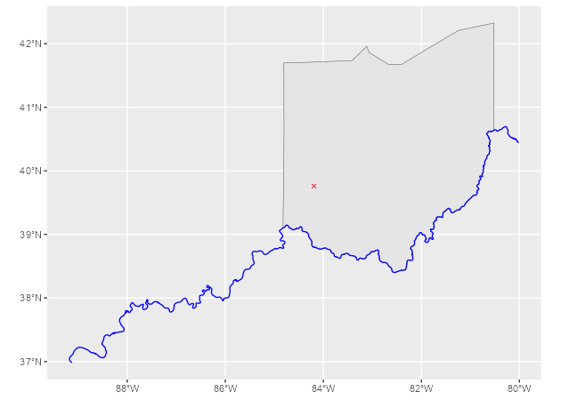

The goal of nominatimlite is to provide a light interface for geocoding addresses, based on the Nominatim API. Nominatim is a tool to search OpenStreetMap data by name and address (geocoding) and to generate synthetic addresses of OSM points (reverse geocoding).
It also allows to load spatial objects using the sf package.
Full site with examples and vignettes on https://dieghernan.github.io/nominatimlite/
Why nominatimlite?
The main goal of nominatimlite is to access the Nominatim API avoiding the dependency on curl. In some situations, curl may not be available or accessible, so nominatimlite uses base functions to overcome this limitation.
Recommended packages
There are other packages much more complete and mature than nominatimlite, that presents similar features:
-
tidygeocoderby Jesse Cambon. Allows to interface with Nominatim, Google, TomTom, Mapbox, etc. for geocoding and reverse geocoding. -
osmdataby Mark Padgham. Great for downloading spatial data from OpenStreetMap, via the Overpass API.
Installation
Install nominatimlite from CRAN:
install.packages("nominatimlite")You can install the developing version of nominatimlite with:
devtools::install_github("dieghernan/nominatimlite")Alternatively, you can install nominatimlite using the r-universe:
# Enable this universe
options(repos = c(
dieghernan = "https://dieghernan.r-universe.dev",
CRAN = "https://cloud.r-project.org"
))
install.packages("nominatimlite")Usage
sf objects
With nominatimlite you can extract spatial objects easily:
library(nominatimlite)
# Extract some points - McDonalds in California
LA <- geo_lite_sf("California", points_only = FALSE)
McDonalds <- geo_lite_sf("McDonalds, California",
limit = 50,
custom_query = list(countrycodes = "us")
)
library(ggplot2)
ggplot(LA) +
geom_sf() +
geom_sf(data = McDonalds, col = "red")
You can also extract polygon and line objects (as provided by the Nominatim API) using the option points_only = FALSE:
pentagon_poly <- geo_lite_sf("Pentagon", points_only = FALSE) # a building - a polygon
ggplot(pentagon_poly) +
geom_sf()
dayton <- geo_lite_sf("Dayton, OH") # default - a point
ohio_state <- geo_lite_sf("Ohio, USA", points_only = FALSE) # a US state - a polygon
ohio_river <- geo_lite_sf("Ohio river", points_only = FALSE) # a river - a line
ggplot() +
geom_sf(data = ohio_state) +
geom_sf(data = dayton, color = "red", pch = 4) +
geom_sf(data = ohio_river, color = "blue")
Geocoding and reverse geocoding
Note: examples adapted from tidygeocoder package
In this first example we will geocode a few addresses using the geo_lite() function:
library(tibble)
# create a dataframe with addresses
some_addresses <- tribble(
~name, ~addr,
"White House", "1600 Pennsylvania Ave NW, Washington, DC",
"Transamerica Pyramid", "600 Montgomery St, San Francisco, CA 94111",
"Willis Tower", "233 S Wacker Dr, Chicago, IL 60606"
)
# geocode the addresses
lat_longs <- geo_lite(some_addresses$addr, lat = "latitude", long = "longitude")Only latitude and longitude are returned from the geocoder service in this example, but full_results = TRUE can be used to return all of the data from the geocoder service.
| query | latitude | longitude | address |
|---|---|---|---|
| 1600 Pennsylvania Ave NW, Washington, DC | 38.89770 | -77.03655 | White House, 1600, Pennsylvania Avenue Northwest, Washington, District of Columbia, 20500, United States |
| 600 Montgomery St, San Francisco, CA 94111 | 37.79520 | -122.40279 | Transamerica Pyramid, 600, Montgomery Street, Chinatown, San Francisco, San Francisco City and County, San Francisco, California, 94111, United States |
| 233 S Wacker Dr, Chicago, IL 60606 | 41.87887 | -87.63591 | Willis Tower, 233, South Wacker Drive, Printer’s Row, Loop, Chicago, Cook County, Illinois, 60606, United States |
To perform reverse geocoding (obtaining addresses from geographic coordinates), we can use the reverse_geo_lite() function. The arguments are similar to the geo_lite() function, but now we specify the input data columns with the lat and long arguments. The dataset used here is from the geocoder query above. The single line address is returned in a column named by the address.
reverse <- reverse_geo_lite(
lat = lat_longs$latitude, long = lat_longs$longitude,
address = "address_found"
)| address_found | lat | lon |
|---|---|---|
| White House, 1600, Pennsylvania Avenue Northwest, Washington, District of Columbia, 20500, United States | 38.89770 | -77.03655 |
| Transamerica Pyramid, 600, Montgomery Street, Chinatown, San Francisco, San Francisco City and County, San Francisco, California, 94111, United States | 37.79520 | -122.40279 |
| Willis Tower, 233, South Wacker Drive, Printer’s Row, Loop, Chicago, Cook County, Illinois, 60606, United States | 41.87887 | -87.63591 |
For more advance users, see Nominatim docs to check the parameters available.
Citation
If you need a citation, use:
citation("nominatimlite")
#>
#> To cite the 'nominatimlite' package in publications use:
#>
#> Hernangómez D (2021). _nominatimlite: Interface with 'Nominatim' API
#> Service_. doi: 10.5281/zenodo.5113195 (URL:
#> https://doi.org/10.5281/zenodo.5113195), R package version 0.1.2, <URL:
#> https://dieghernan.github.io/nominatimlite/>.
#>
#> A BibTeX entry for LaTeX users is
#>
#> @Manual{,
#> title = {nominatimlite: Interface with 'Nominatim' API Service},
#> year = {2021},
#> note = {R package version 0.1.2},
#> version = {0.1.2},
#> author = {Diego Hernangómez},
#> doi = {10.5281/zenodo.5113195},
#> url = {https://dieghernan.github.io/nominatimlite/},
#> }